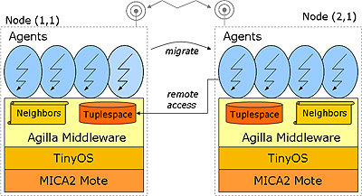
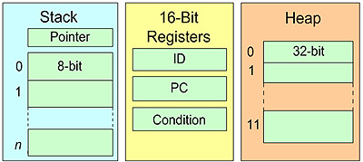

Agilla is a middleware that enables users to inject mobile agents in to a pre-deployed network. Its architcture is shown below.

Agilla runs on top of TinyOS, and supports multiple agents per node. Each node has a tuplespace that is shared by all agents residing on the node, and is accessible by other agents remotely. Agents do not communicate directly with each other, but rather through the tuplespaces. This ensures each agent remains autonomous and decoupled, which simplifies application development. For each node, Agilla performs neighbor discovery and maintains a neighbor list that is accessible to agents residing on the node. Agents can query this list to determine what nodes are within range. Pre-2.0 versions of Agilla did not use beacons for neighbor discovery. They instead assumed the existance of the neighbors based on the Grid Topology. Agilla 2.0 and beyond use beacons to discover neighbors.
An Agilla agent contains it's own code, heap, opstack, and program counter. It is shown below.

Each agent has a 50 byte stack that is dynamically allocated based on the size of the data variables. Note that the agent's instructions are not stored within the agent but rather is managed within the Agilla middleware.